画面案 1版（11/25）。本人が貼った Gemini の案（docs/pm/ext/gemini-home-1125.txt）をもとに描いた。骨格は今のまま「地図とシート」。アプリには入れていない。押すと HTML が開く。下のタブ帯は make/build.py A／B で差し替えられる（はじめは今の5つ）。
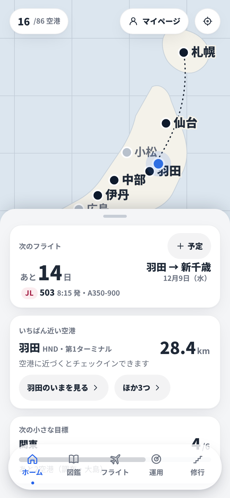
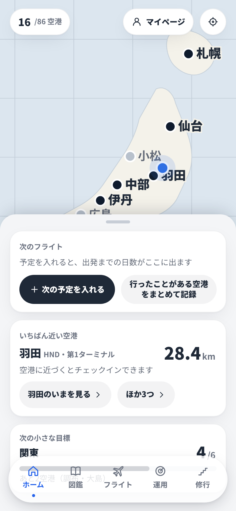
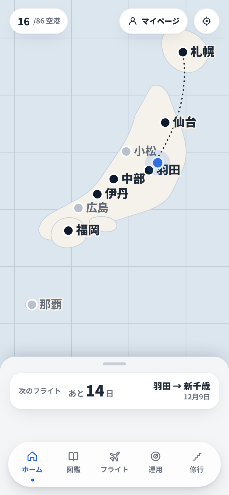
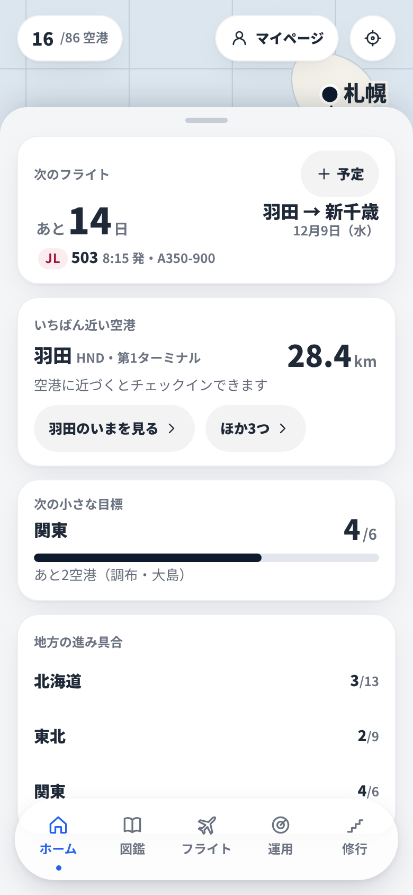
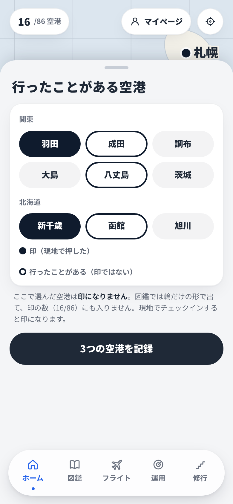
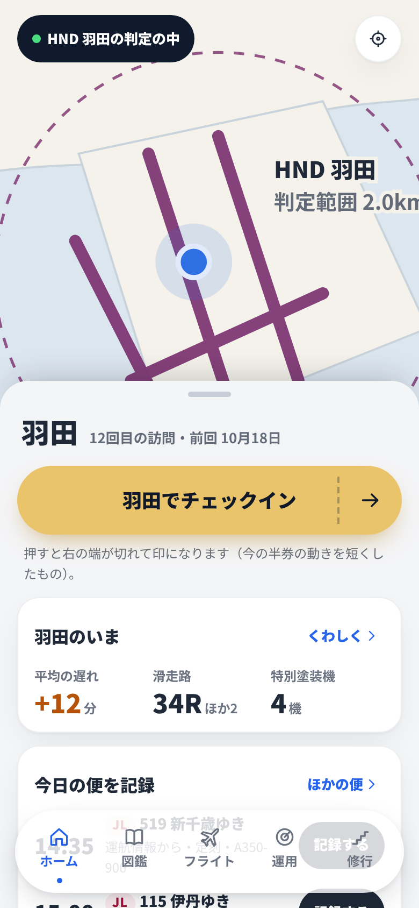
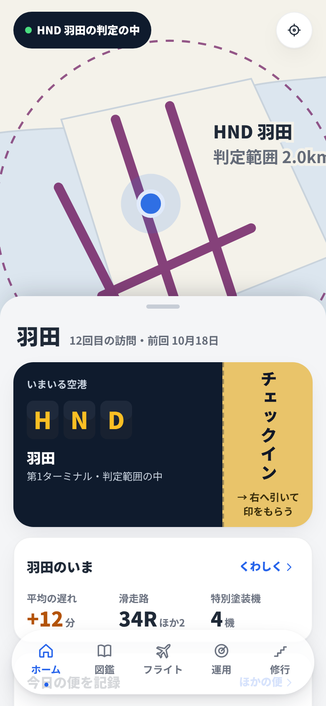
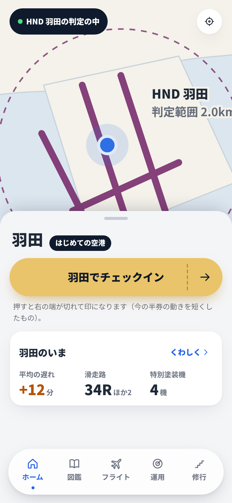
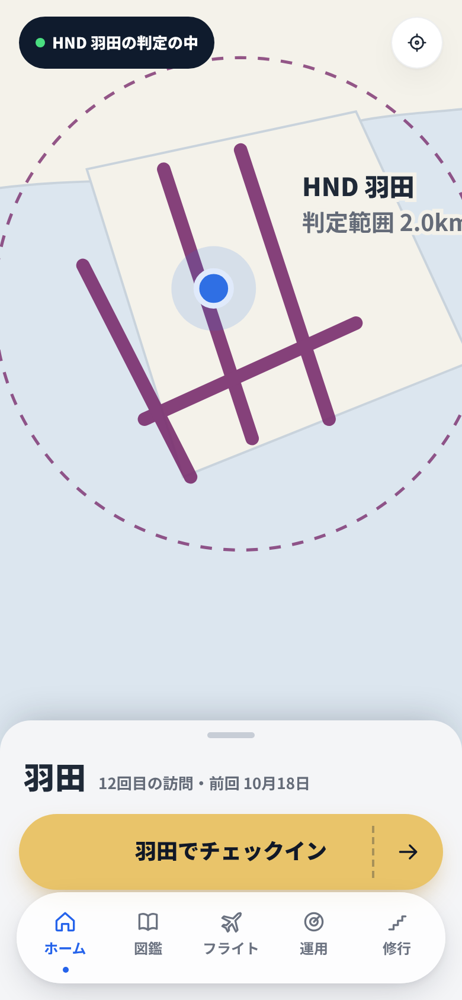
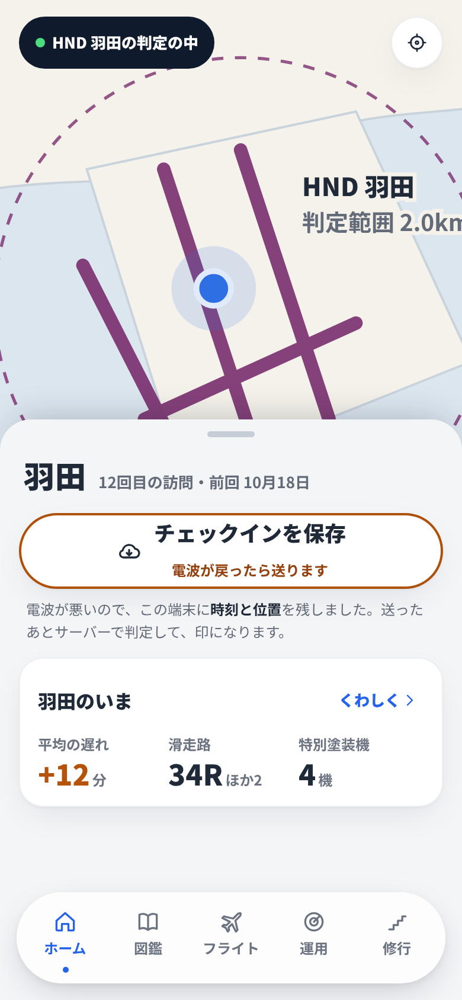
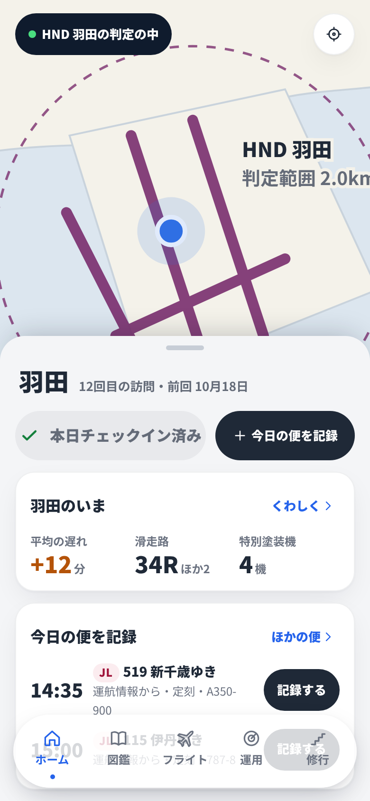
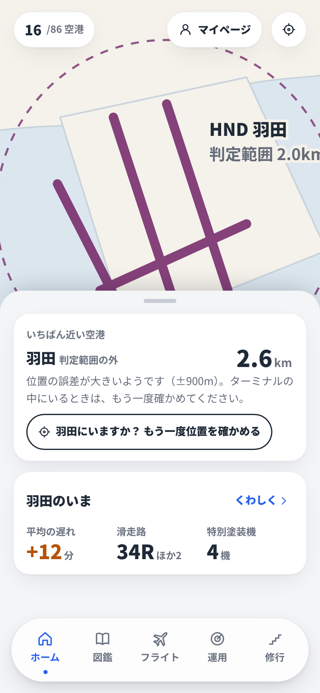
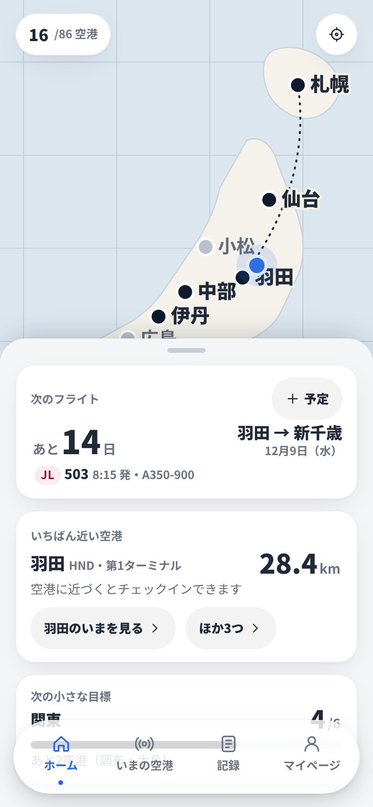
作り方：make/build.py B → make/build.py A → make/shoot.py（390×844 と 375×667、2倍）。測った値：12px 未満の字 0・44px 未満の押す所 0・横のはみ出し 0（make/measure.json）。地図は自前で描いた単純な形。